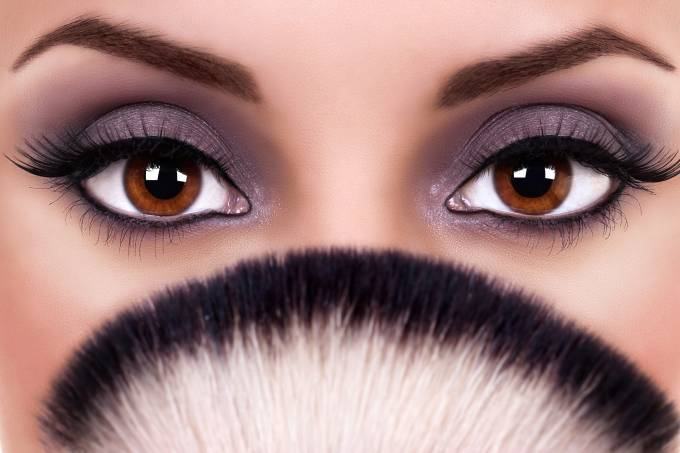

A composição é a prática de decorar a pele e outras partes visíveis do corpo para destacar-los. Também é definido como qualquer produto usado para decorar ou corrigir características faciais ou corporais de uma pessoa, este é constituído por vários elementos com funções específicas para cada parte (olhos, lábios, etc.). Ele é nomeado em honra de Vênus, a deusa romana do amo Nas artes também é usado para corrigir as distorções causadas pela iluminação ou para caracterizar um ator ou atriz como uma personagem de teatro específico. Por extensão, o termo também se refere a os cosméticos que são utilizados para esta prática, como batons e sombras . Também para esconder algumas feridas ou outros problemas de pele.
